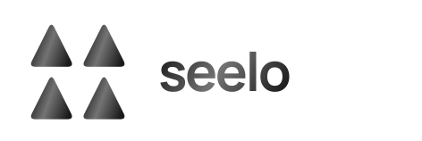
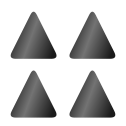
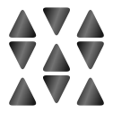
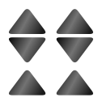

둥근 삼각형을 반복·반전·회전한 8안. 밀집된 정사각형 구성을 유지하면서 모듈의 패턴이 보이도록 만들었습니다.
Q01–Q08 · 단색 / 반전 / 흑백 그라데이션 · 32px / 24px 심볼 비교
같은 삼각형 네 개 · 일정한 반복



직각삼각형 네 개 · 교대로 반전
삼각형 아홉 개 · 상하 교차


삼각형 쌍 네 묶음 · 연속되는 사선

삼각형 네 개 · 90도씩 회전
삼각형 여섯 개 · 행마다 방향 교차


큰 삼각형 네 개 · 엇갈린 대각 중심
긴 삼각형 여섯 개 · 세로 방향 엮임
선택한 안이 없습니다. 필터를 끄고 번호 옆 체크박스로 골라주세요.